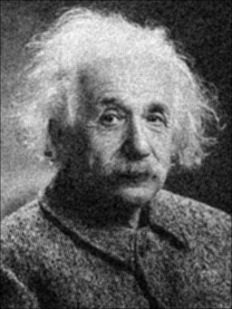

Overview
This challenge combines classical filtering with matrix exports for deeper inspection. It produces noise-injected inputs, applies smoothing and sharpening operators, and saves intermediate results in Matrix Market format for downstream analysis.
Key tasks
- Add noise to the input image and validate norms.
- Apply smoothing (A1) and sharpening (A2) operators.
- Export matrices and vectors to .mtx files.
- Run edge detection (A3) and export the result.
Implementation notes
- Uses Eigen for dense and sparse matrix operations.
- Stb_image handles PNG I/O for intermediate outputs.
- Matrix Market exports enable external inspection.
Filter Comparison
Use the slider to inspect how smoothing reduces noise.

Noised
Smoothed